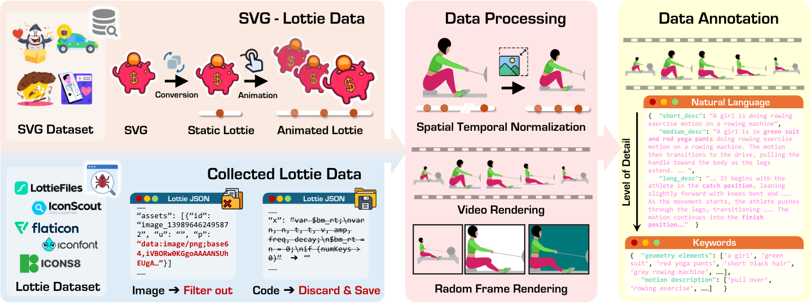

OmniLottie is a versatile framework that generates high-quality vector animations from multi-modal instructions. For flexible motion and visual content control, we focus on Lottie, a light-weight JSON formatting for both shapes and animation behaviors representation. However, the raw Lottie JSON files contain extensive invariant structural metadata and formatting tokens, posing significant challenges for learning vector animation generation. Therefore, we introduce a well-designed Lottie tokenizer that transforms JSON files into structured sequences of commands and parameters representing shapes, animation functions and control parameters. Such tokenizer enables us to build OmniLottie upon pretrained vision–language models to follow multi-modal interleaved instructions and generate high-quality vector animations. To further advance research in vector animation generation, we curate MMLottie-2M, a large-scale dataset of professionally designed vector animations paired with textual and visual annotations. With extensive experiments, we validate that OmniLottie can produce vivid and semantically aligned vector animations that adhere closely to multi-modal human instructions.

We thank the following excellent open-source works:
OmniSVG: A unified framework for SVG generation that leverages pre-trained VLMs. We build upon its methodology for vector graphics generation.
IconShop: The first work leveraging LLMs to generate monochrome, icon-level SVGs. We referred to its parametric implementation.
Concurrent Works:
AniClipart: Animates static clipart using text-to-video diffusion priors.
LiveSketch: Generates sketch animations through optimization-based approaches.
StarVector: Equips LLM with an image encoder for Image-to-SVG generation.
We thank all the contributors for dataset construction and valuable discussions.
@article{omnilottie2025,
title={OmniLottie: A Unified Scalable Vector Animation Generation Model},
author={Author1 and Author2 and Author3 and Author4 and Author5 and Author6 and Author7 and Author8 and Author9 and Author10},
journal={arXiv preprint arXiv:XXXX.XXXXX},
year={2025}
}